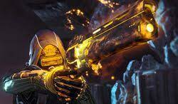

The Solar subclass is considered one of the best subclass for Hunters. A Hunter that uses Solar is called a Gunslinger. This subclass is focused on a variety grenades and throwing knives. There are a few weapon buffs, but the main focus is to throw a lot of knives at your enemies. There is one super to choose from. Golden Gun — Summon a flaming pistol that disintegrates enemies with Solar Light.
There are three melee abilities to choose from.
Knife Trick — Throw a fan of flaming knives that burn targets on hit.
Proximity Explosive Knife — Throw a knife that attaches to a surface upon impact and explodes when it detects an enemy nearby.
Weighted Knife — Throw a knife that deals extra precision damage. Precision knife kills with this melee ability immediately recharge it.
There are also three basic grenades to choose from.
Incendiary Grenade — A grenade that sets enemies on fire when it explodes.
Swarm Grenade — A grenade that detonates on impact, releasing multiple drones that seek nearby enemies.Tripmine Grenade — An explosive grenade that sticks to surfaces and detonates upon enemies who pass through its laser trigger.
You can visit Ikora Rey in the Tower to unlock more grenades.